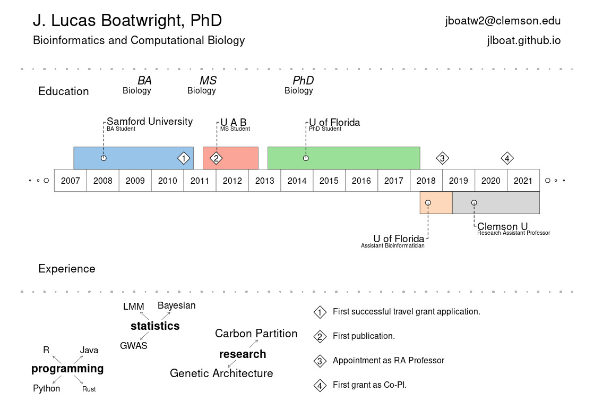

J. Lucas Boatwright
Ph.D., Biology, May 2018, University of FloridaM.S., Biology, 2013, University of Alabama at BirminghamB.S., Major: Biology, Minor: Mathematics, 2011, Samford University
Research Interests
My main interest is using bioinformatics to study systems biology, more specifically the analysis of how genetic variation may have broad phenotypic implications and how these effects modify resource partitioning across diverse groups. As such, I often utilize bioinformatic tools associated with genome-wide association, differential gene expression, and network and co-expression analyses. Even in my spare time, I can be found coding and learning bioinformatics algorithms and statistics. I'm additionally interested in the application of Bayesian statistics and probabilistic programming to solve biological problems.
Programming Experience
I primarily code in Python, but my first love is Java. I often code in R and bash, as well. As such, I am fairly proficient in most C-based languages. I'm a huge fan of R-markdown and Jupyter notebooks (as you can see in my GitHub repo). I prefer *NIX-based operating systems but am not opposed to Windows (I use one at home). I have experience in high-performance computing using both Slurm and TORQUE job schedulers (PBS/PBS Pro).
Ph.D. Dissertation
The characterization of genomic and transcriptomic features in non-model organisms
Master's Thesis
Identification of client transcripts cleaved by IRE1 during biotic stress induction in Arabidopsis thaliana
Teaching Experience
X-lab 1: Interdisciplinary Lab; fall 2017
Genomics and Biotech, spring 2017
Genetics, fall 2016 -- including guest lecture
X-lab 2: Interdisciplinary Lab; spring 2016
X-lab 1: Interdisciplinary Lab; fall 2015
Introductory Biology I Lab, summer 2015
Phage genomics, spring 2014 -- including guest lecture
Introductory Biology I Lab, fall 2013
Introductory Biology II Lab, fall 2011-fall 2012
Intro Human Physiology Lab, summer 2011
Contact Information
Email: jboatw2 at clemson.edu
GitHub: jlboat
ORCID: J. Lucas Boatwright
Google Scholar: J. Lucas Boatwright